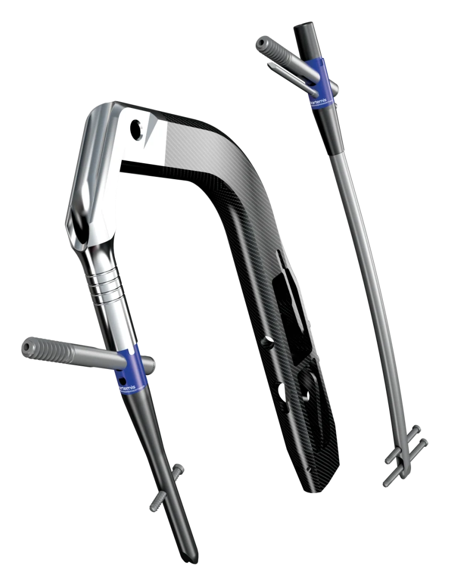
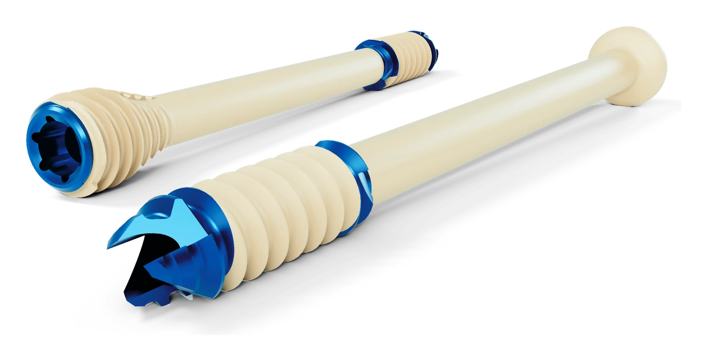
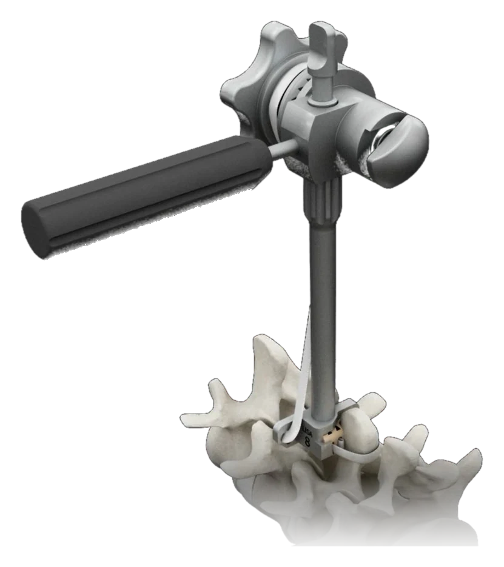
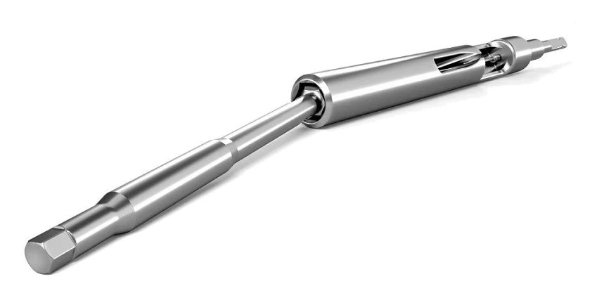

US 10,610,270 B2 & US 11,826,083 B2
Hybrid Intramedullary Rods
A titanium-alloy nail over-molded with a carbon-fibre-reinforced PEEK outer body — the hybrid construction of GLW Medical’s Artemis PFN. Assignee: GLW, Inc.
Home / Patents
The engineers of Bluewater Medical have been inventing in the medical industry for decades and are named on more than 40 patents. Below is a selection — from the patents our references generated for clients — shown with the real products — to inventions used in market-leading products sold today.

A titanium-alloy nail over-molded with a carbon-fibre-reinforced PEEK outer body — the hybrid construction of GLW Medical’s Artemis PFN. Assignee: GLW, Inc.

A cannulated titanium-alloy core with a molded polymer outer body that carries the thread — the hybrid construction of GLW Medical’s Creed screws. Assignee: GLW, Inc.

An instrument assembly for placing an interspinous wedge and tensioning its band from a posterior-only approach. Assignee: Backbone, the developer of LISA.

A proximal femur nail whose recessed lag-screw entry guides a misaligned reamer back into line, protecting the nail. Assignee: Swemac Innovation AB.

A coil-free flexible driver: an angled coupling transmits torque while an elastic member returns the shaft to alignment. Assignee: Swemac Innovation AB.
A bone screw with a flexible connector between head and threaded part that transmits torque yet bends, to bridge a joint gap and support or partly replace ligament stabilization. Assignee: Bluewater Medical GmbH.
A pedicle screw with features for top-loading a tool that helps insert the spinal rod into the screw, while still allowing top-loading and tightening of the assembly. The instrument became known as the Persuader.
An instrument for positioning implants in the human spine.
A further improved fixation clamp with a washer that slides off sideways, so the clamp can be taken apart for cleaning without tools.
A one-piece clamping element whose two jaws are joined by a spring hinge; two elements stack into an articulation joint for external fixator frames.
MRI-safe external fixation: clamps, rods and pins with non-magnetic cores in a non-conductive sheath interrupt the electrical loop of the frame, reducing eddy currents and the heating of pins that can harm the patient.
An insert that turns a non-locking compression hole into a locking screw hole — flexible placement of locking screws without threads in every plate hole.
Implant and instrument features that facilitate minimally invasive bone plating. A broad patent disclosing several new MIS plating approaches.
An improved instrument system for targeting and inserting distal locking screws, building on the distal-locking technique first described by Hans P. Granhed in 1998.
A system of intramedullary nails and instruments that facilitates distal targeting and insertion of distal locking screws.
A special geometry around the lag-screw opening reduces local stress, allowing a smaller outer diameter at equal fatigue strength.
Get in touch
Whether you need a development partner, a second opinion on your portfolio or the right contact in the industry — we come straight to the point.